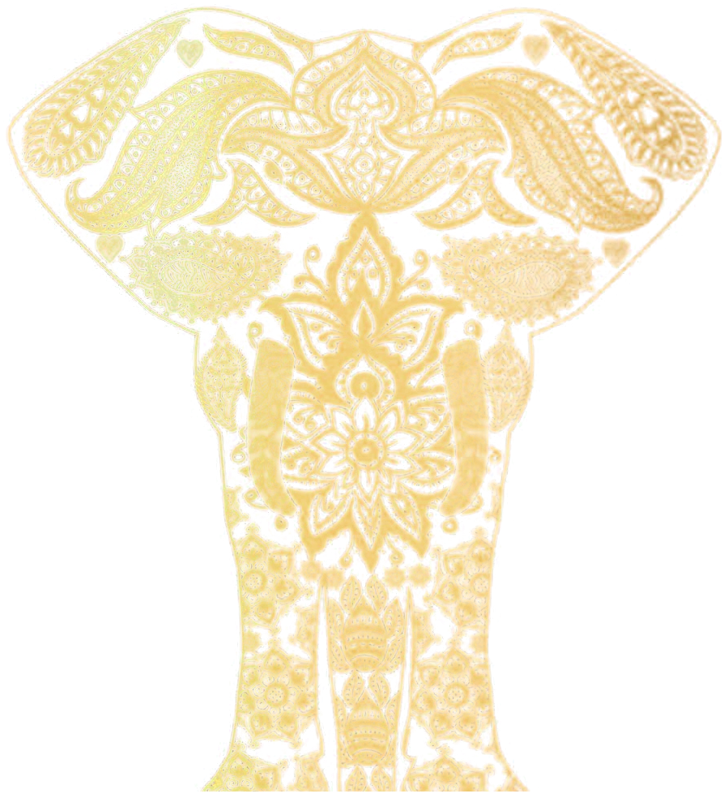
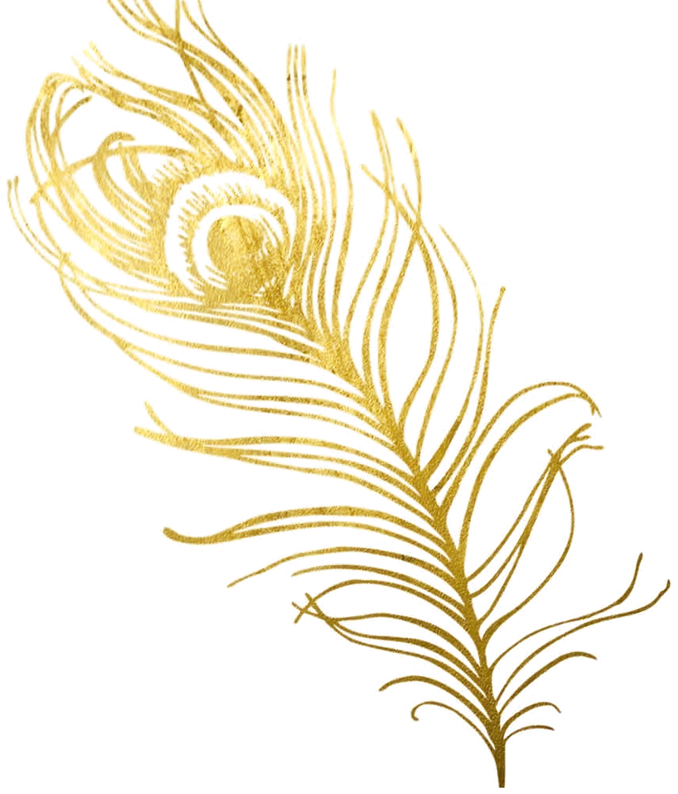

Meditación guiada
Para niños y adultos. Prácticas para habitar el cuerpo, descansar la mente y nutrir el sistema nervioso a través de la respiración, el oído y la visualización.
Conocer másByPilares acompaña procesos de sanación a través de la meditación, el yoga y el trabajo con las emociones. Sin prisa y sin juicio.
Transformarse no significa cambiar quién eres, sino aprender a relacionarte de otra manera.

Cada práctica es una manera de conectar y de integrar. Puedes empezar por una y combinarlas a tu ritmo.
Para niños y adultos. Prácticas para habitar el cuerpo, descansar la mente y nutrir el sistema nervioso a través de la respiración, el oído y la visualización.
Conocer másVirtual o presencial. Mente y cuerpo se trabajan juntos: cada estado de la mente tiene un estado en el cuerpo.
Conocer másNo usamos el cuerpo para entrar en la postura, sino la postura para entrar al cuerpo. La respiración, una vía directa para regular el sistema nervioso.
Conocer másNos lastimamos en vínculo y sanamos en vínculo. Un espacio en grupo para conectar desde el tacto, la presencia y el cuidado.
Conocer más
Calmis a super power
La calma no es ausencia de emociones. Es la capacidad de sentirlas sin perderte en ellas, y se entrena respiración a respiración, sorbo por sorbo.
A veces la verdadera profundidad no se reconoce por lo que alguien expresa, sino por la calma con la que puede sostener lo que siente.
Empezamos por conocer qué te trae, qué necesitas y qué esperas de este espacio.
Elegimos en conjunto la práctica que mejor te acompaña y creamos un lugar seguro para sentir.
Llevas lo vivido a tu día a día con herramientas sencillas que puedes repetir por tu cuenta.
A veces la última llave es la que abre la puerta.
Cuéntanos qué estás viviendo y te ayudamos a elegir la práctica adecuada.